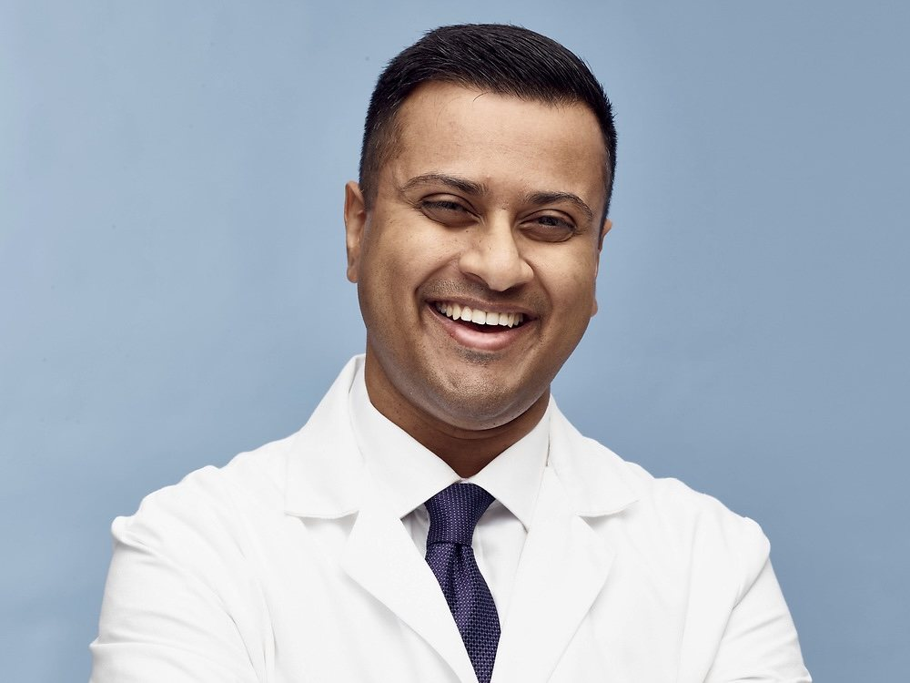

Amrit Chaudhuri
Building the Infrastructure Behind Modern Science and Medicine
I build and scale the organizations, infrastructure, and operating models behind biotechnology, healthcare, and scientific research. I'm best known as the co-founder and former CEO of SmartLabs, where I helped pioneer the Lab-as-a-Service category and scaled it into a national platform.
Read my story →
See the full list of 200+ organizations Amrit has partnered and collaborated with
Selected proof
- Co-founder & CEO, SmartLabs (2014–2024)
- Named to Inc.'s 20 Inspiring Entrepreneurs Improving Health for All (2017)
- Worked with Pfizer, Johnson & Johnson, Merck, AbbVie, Eli Lilly, AstraZeneca, Roche, Moderna, Vertex, Harvard, MIT, Stanford, Oxford, the Broad Institute, and 200+ other organizations across pharma, biotech, academia, and service partners in 10+ countries (full list)
- Coined Lab-as-a-Service and built the first institutional-scale platform
- Founder, Advanced Peptides, 3,000+ projects, 120+ organizations
- Raised $402.6 million across six financing rounds at SmartLabs, 2015 to 2024 (seed → Series C), led by ArrowMark Partners
- Approximately 1 million sq ft of laboratory space leased and developed, of which about 500,000 sq ft was in operation
- Member, NYCEDC Real Estate Life Sciences Advisory Board
- Managing Partner, Kaliper
- Commercialized patented peptide and life sciences technologies into global product platforms (US Patent 9,505,820B2)
What I build
I work at institutional scale across three layers that are rarely built together: the science, the infrastructure that runs it, and the strategy and capital that make it durable.
Scientific Infrastructure
Laboratories, development environments, and operational systems engineered to accelerate discovery and commercialization, built for flexibility and scale from day one.
Operating Platforms
Shared, modular, software-enabled infrastructure and scalable organizational frameworks that let science-driven companies start fast and grow without rebuilding.
Institutional Strategy
Capital planning, venture formation, and commercialization strategy for healthcare systems, governments, developers, and investors.
Now
What I'm building today
After nearly a decade scaling SmartLabs, I'm focused on a portfolio of ventures and advisory work across drug development, infrastructure, and capital.
Kaliper
Operator-led infrastructure advisory and execution for mission-critical environments: laboratories, bio-manufacturing, healthcare, data centers and AI compute, advanced industrial, and operated real estate. Current work includes two 300K+ sq ft campuses in South San Francisco, Taiwan's national CDMO strategy, and an academic medical center merger.
kaliperco.com →APC Science
Drug-development strategy and peptide, antibody, and conjugate technical chemistry. Hands-on with development planning, modality selection, CDMO sourcing, and the harder technical problems: peptide synthesis, antigens, antibody therapeutics, conjugates, ligands, formulation, and scale-up.
apc.science →I also advise founders and investors, sit on New York City's Real Estate Life Sciences Advisory Board, and speak on lab infrastructure, the CDMO landscape, and the future of biomedical R&D.
The hardest part isn't building the science. It's building everything around it.
My Career
Building Platforms for Science
Today I'm Managing Partner at Kaliper and founder of APC Science: Kaliper plans, builds, and operates mission-critical infrastructure across life sciences, healthcare, data centers, and advanced industrial; APC Science is hands-on with drug-development strategy and peptide and antibody chemistry. Before that, two companies defined my path.
This is the story of my highly unusual and sometimes hard-to-believe career. I've told it to friends, family, partners, and people in the industry over the years as it was happening, most often while reminiscing over a glass of wine. Eventually someone I respect a lot cornered me and told me to put pen to paper. So I built this to tell it. My goal is for you to learn something about my journey you can't find on LinkedIn.
About Me
A little beyond the work
I was born in New Delhi, India in 1985 and immigrated to Cambridge, Massachusetts when I was four years old. Despite traveling almost everywhere for work, I've lived in the same five square miles of Cambridge, downtown Boston, and Brookline for 36 years.

Recognition & Highlights
Selected honors
- Inc., 20 Inspiring Entrepreneurs Improving Health for All (2017)
- ENR California Best Projects, Award of Merit, SmartLabs North Tower (2022)
- Great Place to Work Certified, SmartLabs
- Coined Lab-as-a-Service and built the first institutional-scale platform
- Enabled infrastructure behind the first FDA-approved CRISPR therapy
- Keynote, Taiwan National CDMO Industry Summit (2025)
- Statement to the 117th U.S. Congress on biomedical infrastructure
- Member, NYC Real Estate Life Sciences Advisory Board
- Inventor, US Patent 9,505,820B2 (synthetic keratin repair system)
Insights & Press
Writing, talks & press
Essays are published here in full. Talks, interviews and press coverage link to the original source.
Latest essays
All 13 essays → · Subscribe via RSS
Recent talks and interviews
Recent press
Contact
If you're advancing new therapeutics, building complex infrastructure, or launching a new venture, I can help you align strategy, resources, and execution.
Based in Boston. Reach out and let's talk about what you're building.
Connect on LinkedIn →